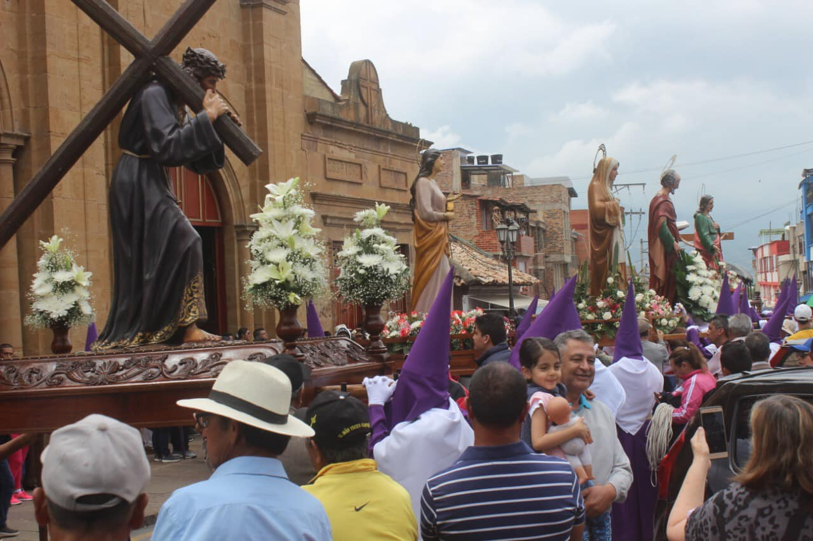
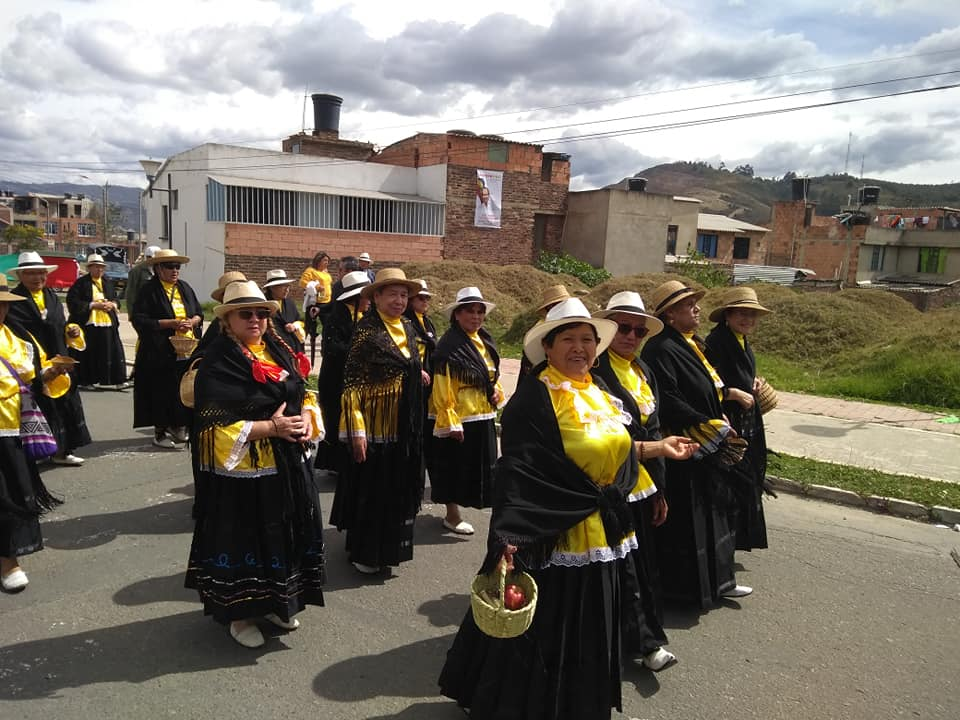
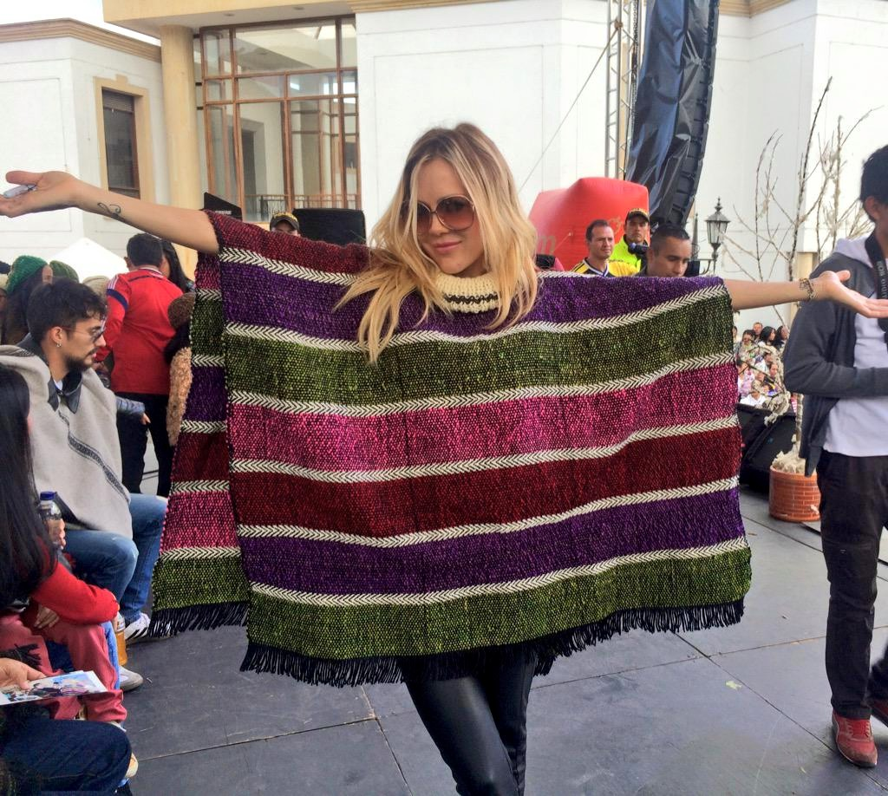
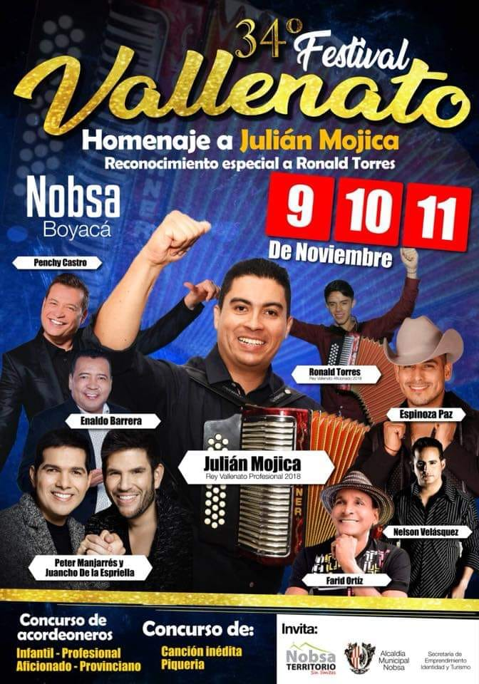
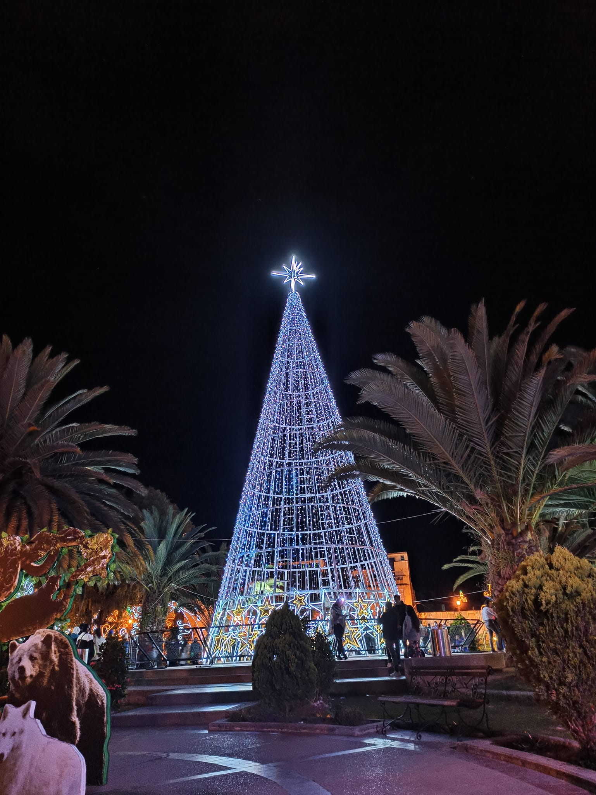
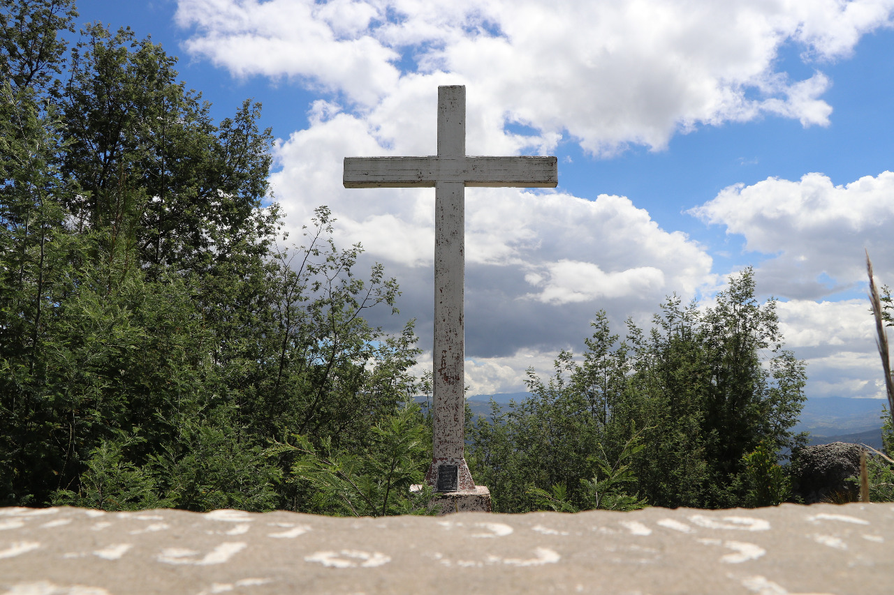
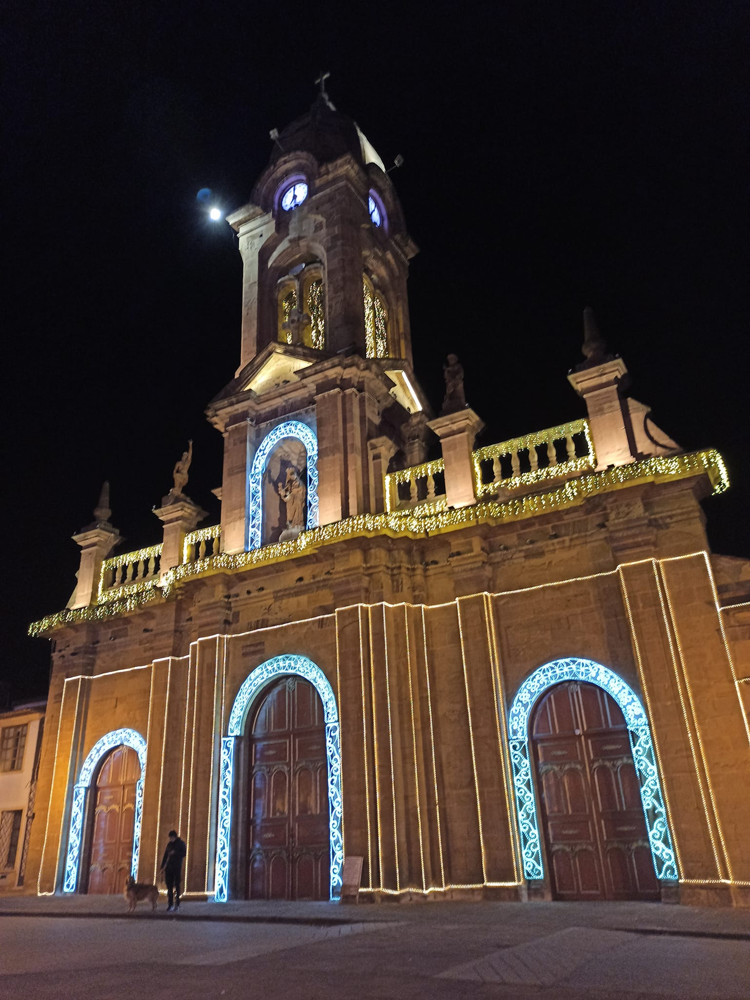

Celebración de la semana mayor

El municipio de la provincia Sugamuxi vive la Semana Mayor.
Como es costumbre en Semana Mayor, el territorio boyacense pone a disposición sus 123 municipios para acoger a miles de personas que buscan pasar un momento de reflexión y de paz.
Nobsa cuenta con diversas actividades religiosas para que fieles y creyentes conmemoren este importante acontecimiento de la historia católica.
Festividades en honor a San Roque

Este santo se ha hecho famoso en el mundo por los grandes favores que consigue a favor de pobres y enfermos. Su popularidad ha sido verdaderamente extraordinaria cuando a pueblos o regiones han llegado pestes o epidemias, porque consigue librar de la enfermedad y del contagio a muchísimos de los que se encomiendan a él. Quizás él pueda librarnos de epidemias peligrosas.
Las Fiestas en Honor a San Roque se realizan en el mes de Septiembre
Celebración del día mundial de la ruana

Nobsa celebra el Día Mundial de la Ruana a mitad de año, como homenaje a la tradición de este municipio donde La Ruana de Nobsa tiene todo el protagonismo.
Hay más de 25 Artesanos y sus familias dedicados a elaborar ruanas en lana de nobsa desde hace muchos años.
En Nobsa se hizo La Ruana mas grande del mundo, medía 35 metros de largo por 20 metros, también una al Papa Francisco, a los artistas Vicente Fernández y Luis Miguel además de otros personajes como presidentes, políticos, actores y actrices.
Festival Vallenato

Alo largo de un poco más de tres décadas, el Festival Vallenato de Nobsa ha establecido fuertes lazos con los amantes del género tradicional. Tanto así que la competencia boyacense –caracterizada por su alto nivel interpretativo– se ha vuelto tan representativa del pueblo como sus famosas ruanas.
Así, el plan vallenato es ir a Nobsa en noviembre y apreciar sus concursos.
Temporada Navideña

El espíritu navideño nace de la fraternidad de los vínculos de amistad y amor, de compartir, por ello este diciembre y enero te invitamos a que compartas lo más valioso que posees: tu tiempo, rodeado de tus seres queridos. Bríndales un recorrido por algunos de los pueblos más bonitos de Boyacá llenos de coloridos, luces y magia, además de la decoración, puedes disfrutar de las tiendas de artesanías y los puestos de venta de dulces y comidas típicas.

1. Calle de Ruanas y Artesanías
Nobsa es reconocido por la ruana y por contar con una comunidad especialista en tejidos de fibras naturales, forja artesanal, muebles rústicos, talla de madera y piedra, elaboración de campanas artesanales, cerámica y productos derivados de la breva y la uva.

3. Mirador Capilla de Lourdes
La mejor vista del pueblo de camino a la capilla y a la cruz de aranda, buena ruta tambien para hacer deporte, para tener en cuenta.

4. Capilla de Lourdes
Situada en el monte denominado "El Calvario", a unas cuantas de el parque principal se encuentra la Capilla de Lourdes, uno de los principales bienes culturales y religiosos del municipio de Nobsa Boyacá

5. Cruz de Aranda
La Cruz de Aranda es un monumento ubicado en la zona rural de municipio de Nobsa en el departamento de Boyacá al centro-oriente de Colombia en la región del Alto Chicamocha.
La cruz fue erigida en el año de 1886 por el padre José Agustín Aranda, quien era el párroco del municipio por ese entonces.
Su creación se debe a que como reza la leyenda el Diablo se aparecía en el municipio de Nobsa y hacía estragos, fue por ello que el padre José Agustín Aranda decidió levantar la cruz a finales del siglo XIX.
El 1.º de Mayo los habitantes de Nobsa realizan una tradicional peregrinación a la cruz, que además de conmemorar el Día del trabajador también hace homenaje a un lugar que ha marcado la historia del pueblo. Este día también se realiza una carrera atlética hasta el lugar, contando con la participación masiva tanto de jóvenes como de adultos. Para llegar al lugar se realiza una caminata de alrededor de tres horas desde la zona urbana del municipio. Se han construido senderos y caminos que hacen más fácil el acceso también es un lugar preferido por los deportistas como los dé bicicletas de montaña (mtb), de todos los lugares del país.

6. Iglesia municipal
Templo de 3 naves, construida en 1.898 llama la atención por su torre construida en piedra muy bien talla y su estilo dórico-barroco en él se admira en cuadro de San Jerónimo, lienzo del pintor español Francisco Zurbarán; también se venera el cuadro de San Roque patrono del pueblo cuya romería se lleva a cabo el 8 de Septiembre de cada año. El altar fue elaborado en manera por el ebanista Anselmo Zarate hijo de esta localidad quien hizo otras iglesias de la provincia del Tundama y Sugamuxi y elegantes altares..

7. Parque Principal
Parque central está diseñado por círculos cuatro en total, estos a su vez son el espacio del público y su entorno está cubierto de palmeras que dan sombra a los habitantes que toman un rato de encantador tiempo de ocio donde el cálido clima y la suave brisa cuentan lo pasivo de su pueblo.